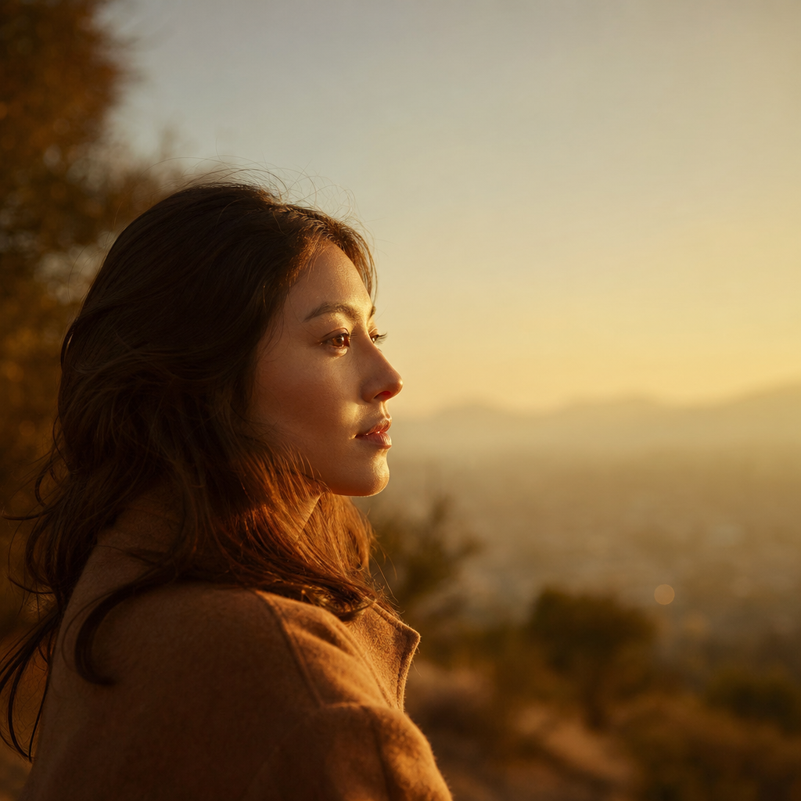
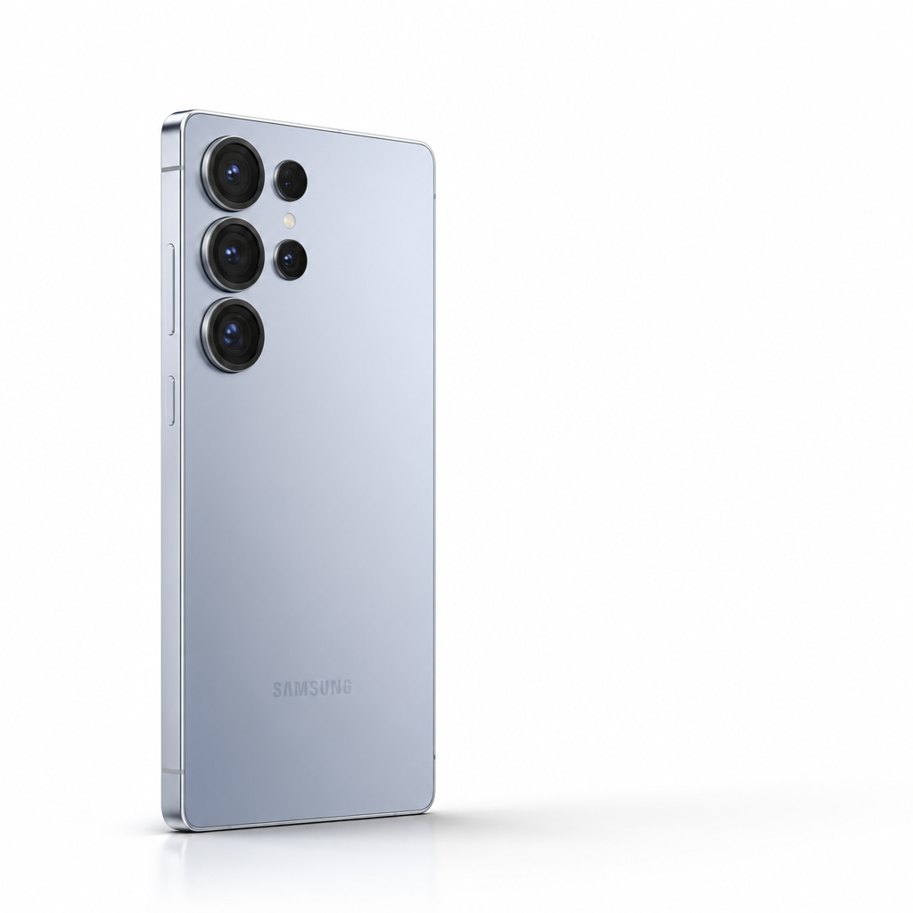
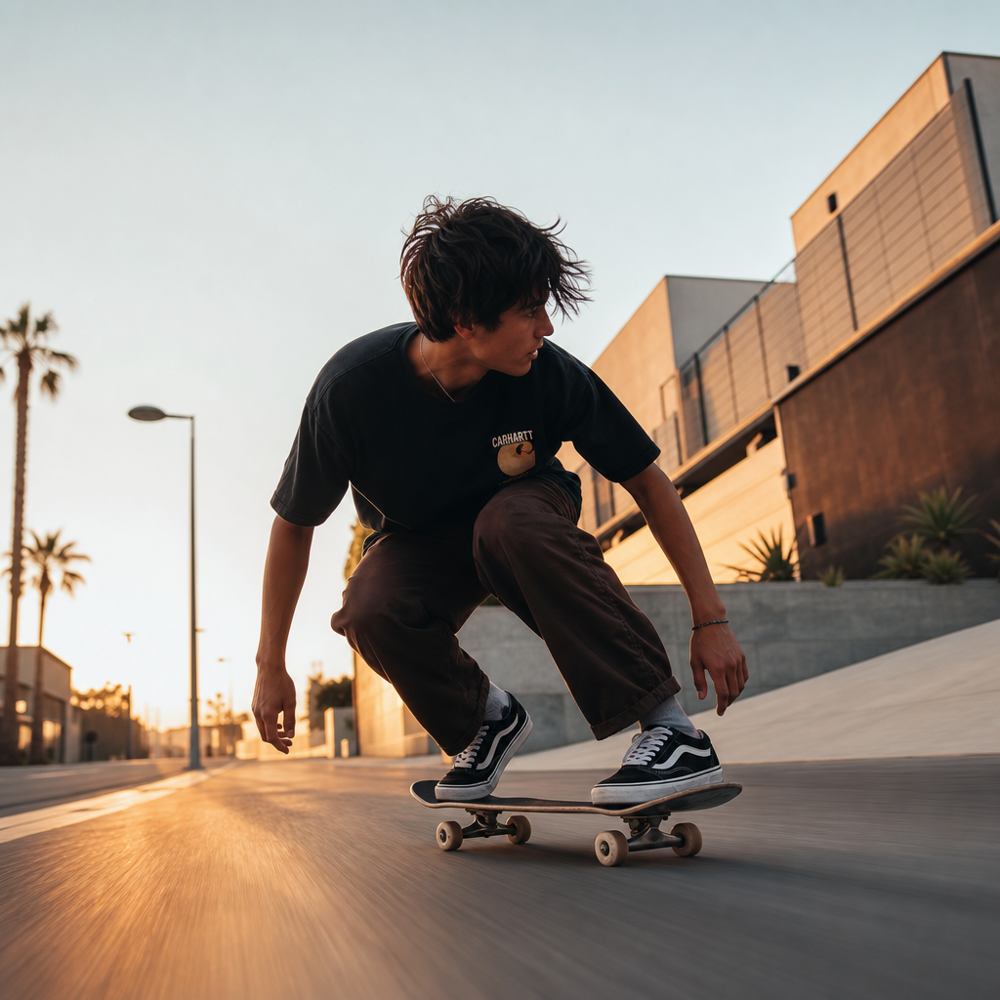
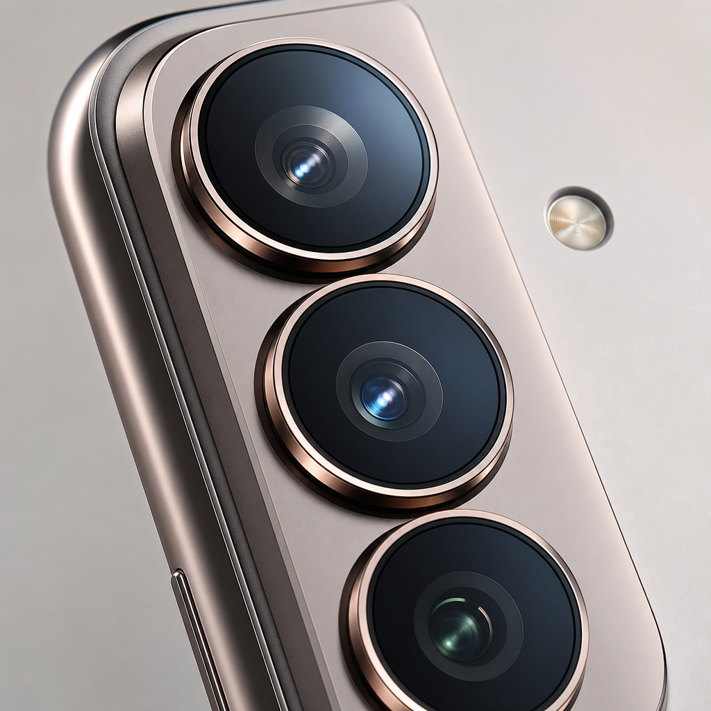

כאשת פיתוח תוכנה, אני רגילה לעולם של לוגיקה ומבנה נתונים. אבל בפרויקט הזה אפשרתי לטכנולוגיה להפוך למכחול דיגיטלי.
המצפן שבחרתי "לראות מעבר ליכולות העין האנושית" לא היה רק נושא הסרטון. הוא היה העיקרון שהוביל כל החלטה לאורך הדרך.
העבודה התבססה על סטאק טכנולוגי מתקדם ועל תוכנה ייעודית שפיתחתי בעצמי לעריכת תמונות. המטרה היתה אחת: איכות ויזואלית ללא פשרות.

התהליך התחיל בצלילה עמוקה אל ה-DNA של סמסונג. חקרתי ספריות מותג, צפיתי בביקורות ובפרסומות, וניסיתי להבין לעומק אילו פיצ'רים הופכים את ה-Galaxy S25 Ultra לחוויית צילום שאין לה אח ורע.
ברגעים אלו, כשהחומרים זרמו על המסך, חזרתי דווקא לנייר ועט. המקום שבו השראה הופכת לרעיון גולמי.
באמצעות מודלי שפה (ChatGPT, Gemini, Grok), זיקקתי את הרעיונות לבריף מהודק של 30 שניות. בניתי "פאזל" של סצנות, תוך ידיעה שב-Gen AI המערכת לפעמים בורחת מהמסגרת המתוכננת לטובת יצירתיות מפתיעה. בחרתי לחבק את הבריחות האלו.
תמונת הפתיחה היא הכל. היא צריכה לתפוס את העין וליצור חיבור רגשי מיידי. הקדשתי לה זמן רב, ללא פשרות על פילטרים או קומפוזיציה, כדי שהמסע יתחיל בעוצמה מקסימלית.

כמו בבניית בית, יצרתי תמונות בסיס באמצעות פרומפטים מורכבים. במקביל, הלחנתי את הפסקול ב-Suno וערכתי ב-Adobe Audition.
עבורי, המוזיקה היא המסגרת של הסרטון: היא נותנת את הטון, האנרגיה והקצב שעל פיהם נגזרים המעברים הוויזואליים.
כאן מתרחש הקסם הטכנולוגי האמיתי. בעזרת Veo 3, Grok, Midjourney ו-Kling, מפיחה חיים בתמונות הבסיס.
זהו תהליך של ניסוי וטעייה. לעיתים פרומפט מדויק מייצר את התנועה המושלמת בניסיון הראשון; לעיתים אני מריצה את אותה הסצנה במספר מודלים במקביל. השילוב בין השליטה שלי לבין המקריות של הבינה המלאכותית הוא שהופך את היצירה לייחודית.
זה השלב שבו כל החלקים מתחברים לכדי שלם אחד. CapCut פתוחה על המסך, ובונה את הרצף על ה-Timeline: מניפולציות מהירות, טרנזישנים חכמים, אפקטים וחיתוכים שמתכתבים עם קצב המוזיקה.
המטרה: זרימה מושלמת שתעביר את המסר Flash Back to Your Moments. לא כאוסף סרטונים, אלא כחוויה רגשית וטכנולוגית רציפה.

בעולם שבו הכל נע מהר, הרגעים לא מחכים. חיוך ברקע, מחווה של אדם זר, קרן אור שפוגעת בפנים — הם חולפים כהרף עין. החדשנות של Galaxy נועדה לשמור עבורנו בדיוק את השניות האלו.
מצלמת ה-Galaxy S25 Ultra לא תופסת את מה שרואים. היא שומרת את מה שכמעט פספסנו.
Galaxy S25 Ultra לא רק שומר את הזיכרונות. הוא עוזר ליצור את הרגעים שתחזרו אליהם בעתיד.
| Scene | תיאור | תחושה | פרטים מיוחדים |
|---|---|---|---|
| The Hook | תקריב של אישה מחייכת עם הכיתוב "Flash Back to your Moments" | נוסטלגי ומזמין | Slow-motion, תאורה רכה |
| Inner Innovation | מבט פרוס על פנימיות ה-S25 Ultra עם גוני נחושת | היי-טק ומדויק | מעבר הרכבה מהיר, אפקטי סאונד מכניים |
| Dynamic Motion | סקייטבורד ברחוב עירוני עם ממשק "Saturation" פעיל | אנרגטי ותוסס | גזרה מהירה, מצלמה עוקבת |
| Crowd Connection | הליכה בסלואו-מושן ברחוב הומה | ממוקד ושקט | עומק שדה, טשטוש הרקע |
| Nightlife Energy | ריקוד בקונצרט בתאורת ניאון | חשמלי ומרגש | גזרות קצביות מהירות |
| Adventure Snap | מעבר מיידי ממדבר לחוף ים | הרפתקני וחופשי | שכבות-על, תיאום עם המוזיקה |
| Macro Detail | תקריב קיצוני על מודול המצלמה המשולשת | פרמיום ובולד | השתקפויות מבריקות, פלאר עדשה |
| The Companion | האישה וכלבה בשדה שטוף שמש, מעבר ללילה | חם ונאמן | ממשק "Picture Softening", שעת הזהב |
| AI Magic | שקיעה עירונית מושדרגת ע"י AI Generative Tools | עתידני ומפעים | אפקט "גל" ויזואלי לרחבי השמיים |
| The Gesture | סלפי עם גבר מבוגר המנופף בכף ידו | אנושי וידידותי | טקסט "Free-Hand Selfie", פוקוס עובר אליו |
| The Reveal | לוגו SAMSUNG על רקע שחור | איקוני וסמכותי | חשיפה דרמטית, fade-to-black קולנועי |
נהניתי מהתהליך הזה כמו שנהנים ממסע — שנבנה צעד אחר צעד, רגע אחר רגע. אני מקווה שגם אתם תרגישו את הקסם, את התנועה, ואת הרגעים שנשמרו כאן.